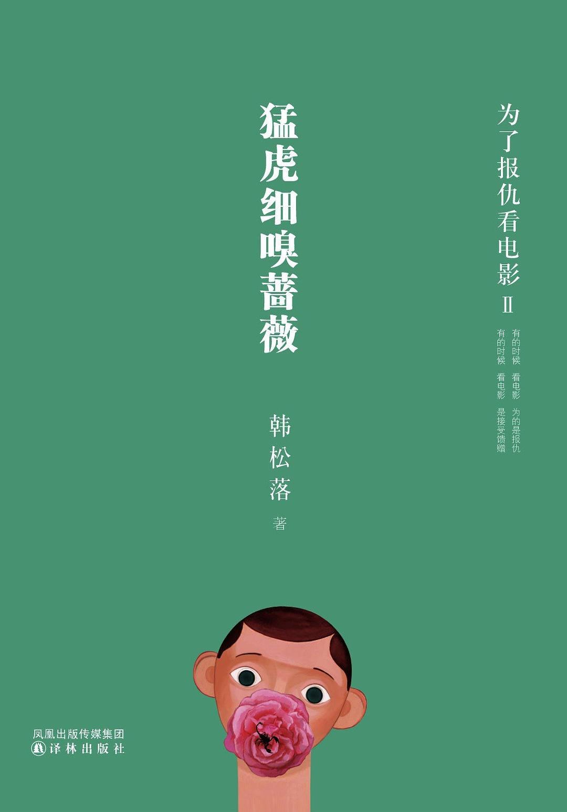

《猛虎细嗅蔷薇》

总体观点
电影是人类在黑暗影院中集体服下的精神止痛药：韩松落剥离了学院派生硬的镜头语言分析，将银幕故事作为现代人创伤记忆、隐秘情欲与生存恐惧的显微切片。
心有猛虎之坚毅，细嗅蔷薇之温柔：真正的生命韧性在于既能冷峻直视时代的残酷凋敝与生老病死，又能在日常生活的缝隙中保持对微小美感的无限敏感与体恤。
一代光影巨星的陨落标志着古典浪漫主义的终结：通过对张国荣、梅艳芳、林青霞等黄金时代名伶宿命的追思，打捞那些在数码流水线时代业已失落的传奇风华。
核心观点
-
1. 银幕作为心理避难所：我们在他人的梦境里自我疗愈
黑暗中的放映机光束创造了一个无菌的平行时空，观众在角色的受难与相拥中，将白日里无法言说的委屈与孤独尽情释放。
观看《肖申克的救赎》中的雨夜越狱狂呼，不仅是主人公的胜利，更是每一个被困于平庸日常的普通人内心深处的灵魂越狱。 -
2. 名伶的宿命与时代落幕：传奇风华的不可复制
黄金时代的香港电影巨星身上凝聚着整个东亚经济腾飞与草莽江湖的豪情，他们的凋零不仅是个体悲剧，更是一个美学时代的绝唱。
追忆梅艳芳身着纯白婚纱倒在红馆舞台的最后一幕，指出那是流行文化史上最决绝也最悲壮的嫁给舞台的殉道仪式。 -
3. 西北荒野与苍茫乡愁：干涸土地滋养的坚韧心性
韩松落生于长于西北大漠与工业厂矿，这种荒凉辽阔的地理基因渗透其文字，让其影评始终带有一种深沉的大地悲悯与克制力量。
在评述西部公路片时，作者融入自己少年时穿越戈壁风沙的肉身记忆，赋予影像以尘土飞扬的真实体温。 -
4. 肉身的疼痛与美学救赎：在创伤裂缝中长出的蔷薇
苦难本身并不高尚，但人在面对不可逆的衰老、疾病与背叛时依然保有体面与爱人的能力，才是人性最令人动容的光芒所在。
解读阿莫多瓦电影中残疾与变性角色的抗争，赞叹其色彩斑斓的视觉狂欢正是对残酷命运最有力的回击。 -
5. 猛虎与蔷薇的共生辩证：在刚烈与温柔之间安顿灵魂
世人往往容易走向极端：要么被生活磨砺得冷酷麻木，要么脆弱得不堪一击；唯有融合猛虎的骨骼与蔷薇的嗅觉，方能在世间从容行走。
作者自述数十年在医院照料病患亲属的艰辛经历，正是电影与写作的温润蔷薇，支撑着他那只负重前行的疲惫猛虎。
全书结构
-
第一辑：光影的暗涌（电影作为心灵的手术刀）
深度剖析多部经典华语及欧美佳作；探讨创作者如何将幽微的人性欲望、恐惧与救赎投影于银幕光斑之中。
评《色，戒》中易先生与王佳芝在逼仄空间内的眼神博弈，解剖恐惧与情欲交织下的致命沦陷。 -
第二辑：浮华的挽歌（香港传奇巨星的时代印记）
深情回望张国荣、梅艳芳、钟楚红、王祖贤等港片黄金一代；还原浮华名利场背后名伶们的纯真、孤独与时代宿命。
写张国荣在《阿飞正传》中的无足鸟独舞，阐释那种无可挽回的漂泊感如何成为一代人青春记忆的永恒图腾。 -
第三辑：荒原与行者（西部视界与异乡客的精神漫游）
聚焦公路片、西部片与边缘题材；融合作者在甘肃矿区生长的泥土记忆，书写漂泊者在广袤大地上的孤独与自省。
评《断背山》中怀俄明州的静谧雪峰与风吹草低，探讨世俗道德天罗地网下那份克制到骨髓里的纯真爱恋。 -
第四辑：肉身的苦旅（伤痛叙事与人道主义微光）
精选描写疾病、衰老、底层挣扎与绝症照护的沉重影像；探讨艺术如何赋予肉体受难者以神圣尊严。
分析迈克尔·哈内克电影《爱》中对老迈肉身失控过程的冰冷记录，直面当代社会最残酷的终极临终伦理课题。 -
第五辑：心有猛虎，细嗅蔷薇（生活美学与精神自愈）
收录全书总结随笔与生活札记；阐发书名寄意，分享作者如何在残酷琐碎的世俗磨砺中通过音乐、电影与文字守望心底的蔷薇园。
作者写道：愿每一个在白天拼命咬牙扛起生活重担的疲惫猛虎，都能在夜晚的书灯与光影下，找到一朵属于自己的蔷薇花。